Continental Cargo Workspace — mobile guide
Entry to the workforce platform (attendance, scheduling, leave, compliance).
If sign-in fails or you never received credentials, contact your system administrator. Do not share passwords.
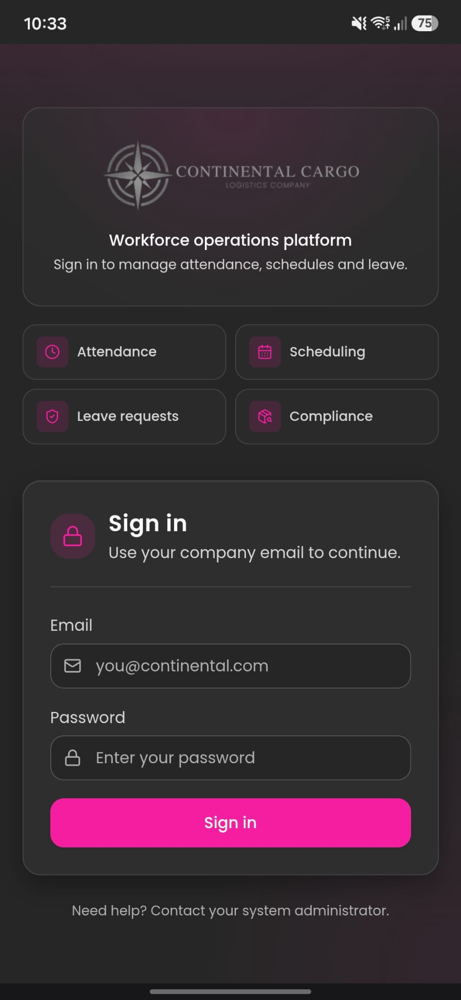
Daily hub after sign-in. On a phone, scroll down — several cards sit below the first screen.
Four-digit ID for the warehouse time clock / kiosk. Use this when you clock in or out — not your password.
Next rostered shift (date/time/site when published), or No upcoming shifts.
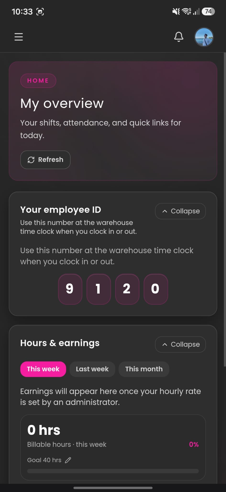
| Group / item | Purpose |
|---|---|
| My dashboard | Home: ID, hours, next shift, week preview |
| My records | Check-ins/outs, photo verification, worked blocks |
| My schedule | Roster + confirm attendance |
| My leave | Vacation / leave / permission requests |
| My courses | Training tracking, evidence, admin approval |
| My profile | Personal data — required; admin approval |
| Announcements | Company messages for your dept / location |
| Help / Report issue | Guides and support tickets |
| Inspections | ULD / AWB intake (if enabled) |
| Kiosk check-in | On-site time clock |
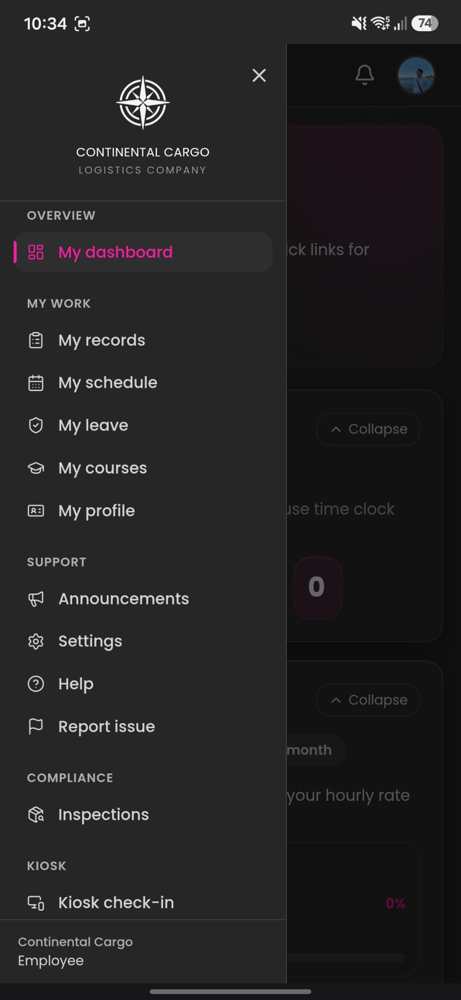
Managers assign your shifts. You typically receive an email when the roster is published — also open My schedule in the app to act on it.
Important: You must confirm your attendance for assigned shifts. Do not ignore assignment emails.
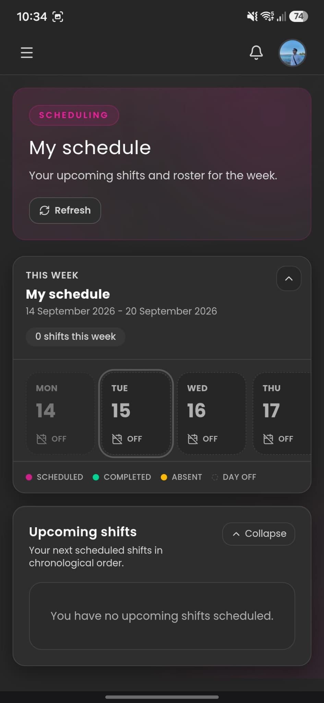
Accept the shifts assigned to you so planners can lock coverage. If you cannot work a shift, contact your manager immediately.
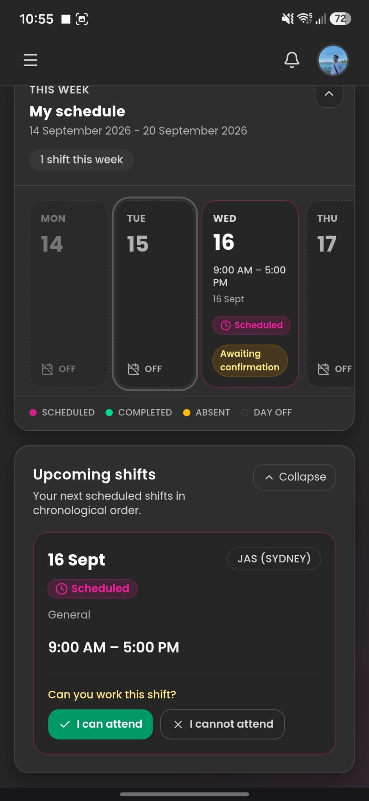
Tap the bell for shift assignments, confirm reminders, announcements, training deadlines, and other alerts.
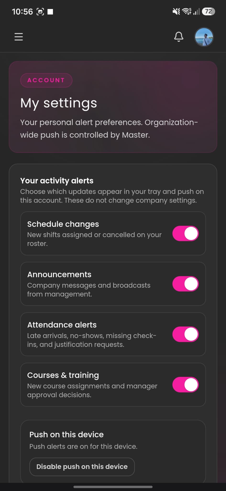
My records shows check-ins, check-outs, and photo verification for your punches.
Tap Worked shifts for complete work blocks (start, end, duration, related detail) — not only raw punch lines. Use this to review a full day’s worked time.
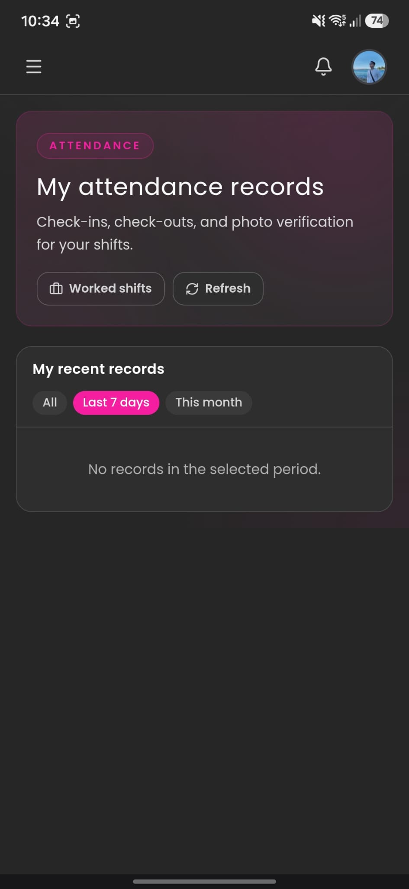
If you were late or absent, submit a justification for manager / admin review (reason, and evidence if requested).
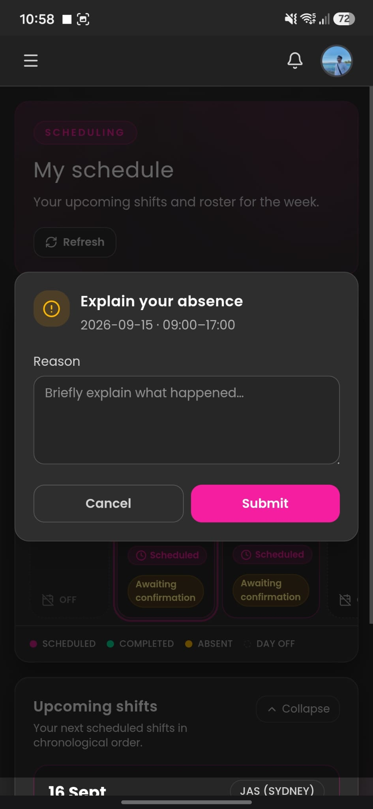
Company notice board filtered to your department and location. Check regularly for official operational updates. Empty list = nothing targeted to your profile yet.
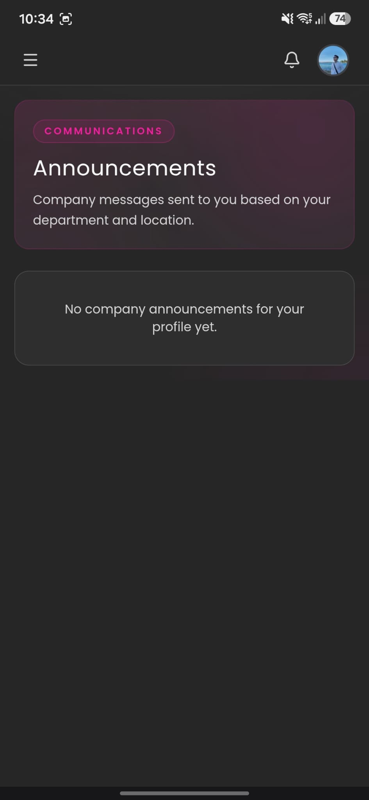
My leave is where you request time off and permissions — vacation / annual leave, personal leave, sick leave (as configured), or other absence types your company defines. It is not the same as confirming a rostered shift.
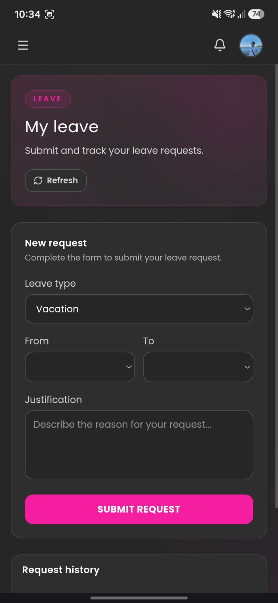
My courses is the training follow-up and compliance tracker — not the learning platform itself.
| Status | Meaning |
|---|---|
| Still to do | Assigned; not finished / not marked complete |
| Awaiting review | Evidence submitted; waiting for admin |
| Approved | Administrator accepted completion |
Finish before the deadline. Unapproved courses may affect role compliance.
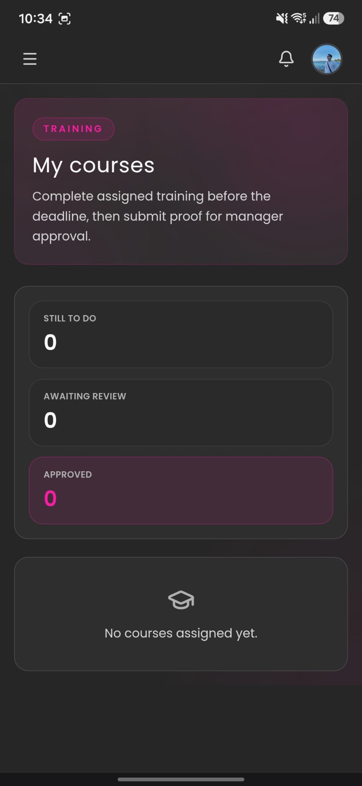
You must complete your personal profile and submit it for administrator approval.
If rejected, fix what was requested and submit again. Keep data up to date for contact and payroll.
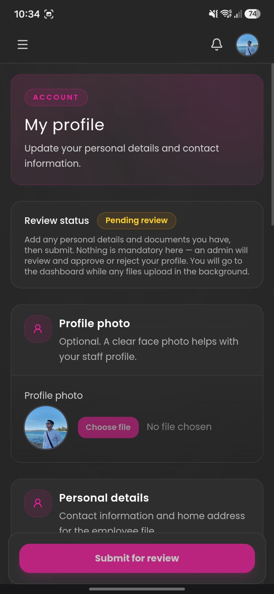
Support ticket for problems with the app, kiosk, schedule, or account.
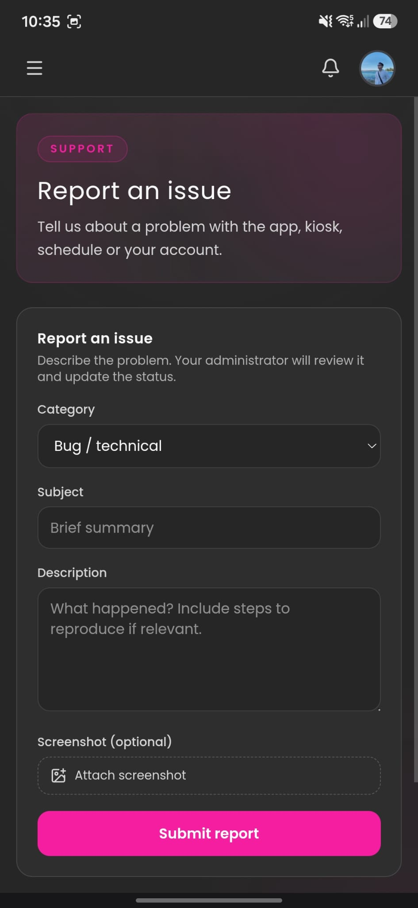
If enabled: register ULD / AWB warehouse intake (shared with Continental Inspect where applicable).
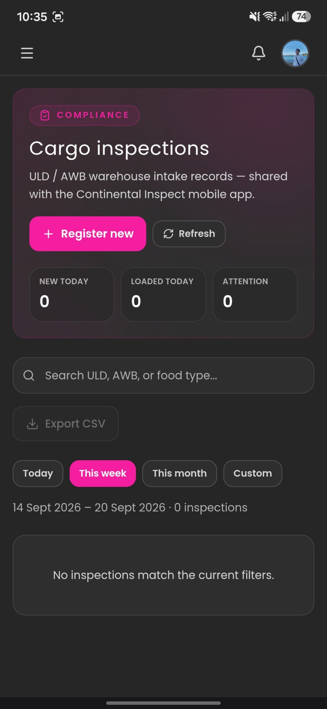
Scroll the full form. GPS is captured when you save.
Identification: ULD (optional), AWB, cargo category (LCL / Pallet / Loose / Breakbulk), Client.
Cargo details: Conservation (Frozen / Refrigerated / Ambient), food type, weight, box count, optional temperature, Damage / Issues toggle.
Outbound transport (optional): plate, driver, transport company.
Evidence: photos (≤ 3 MB, optimized after save) and videos (original quality). Save — keep the tab open until the upload progress bar finishes.
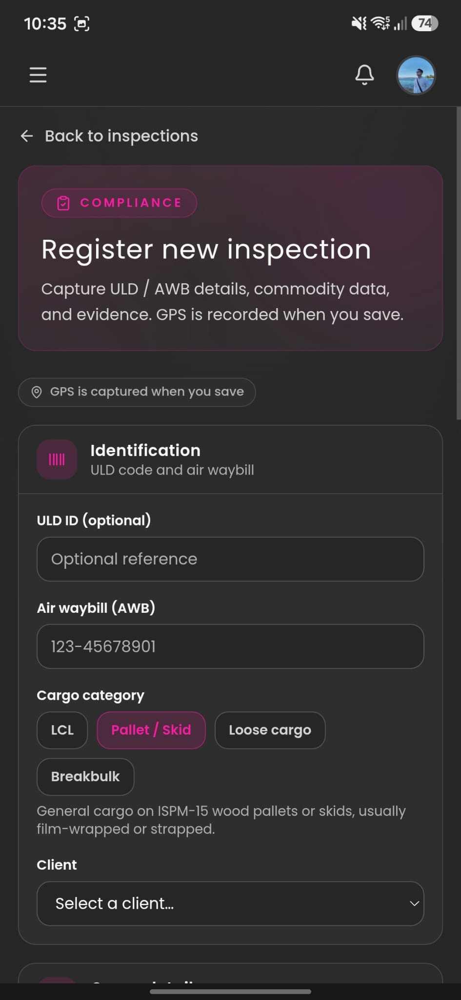
Punch is allowed within about 200 metres of the work location for that site. Outside range → move closer and retry.
Admin may enable NFC or QR punch instead of (or as well as) the keypad. Ask which options your site uses.
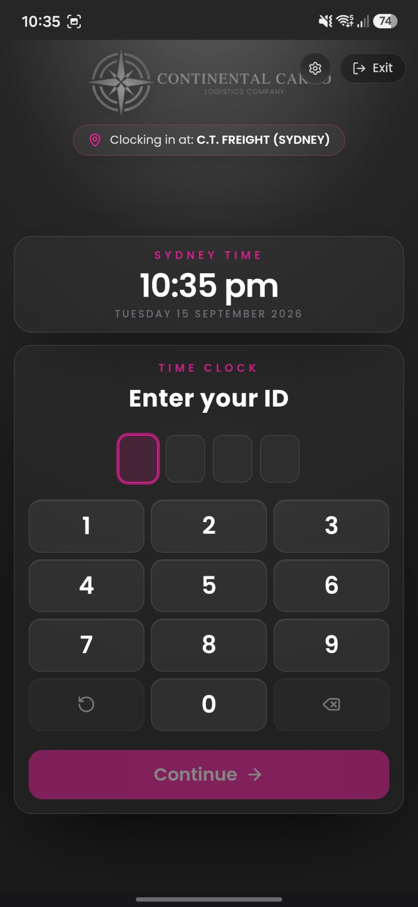
Videos, PDFs, documents, and links matched to your role, department, and location. Ask admin to publish content if the list is empty.
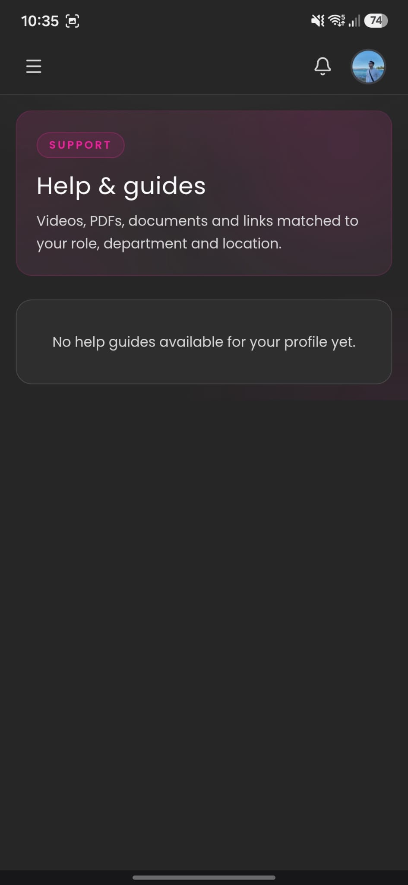
| Topic | What to do |
|---|---|
| Forgot password | Ask your administrator to reset it. |
| Wrong ID at kiosk | Check Your employee ID on My overview. |
| Punch failed / outside range | Stay within ~200 m; confirm location permission. |
| NFC / QR missing | Only if admin enabled for your site. |
| Missing shift / no email | Check spam; My schedule + Refresh; confirm attendance. |
| Vacation / time off | My leave — type, dates, justification; wait for approval. |
| Late or absent | Submit late / absence justification for review. |
| Profile Pending review | Complete data; wait for admin (or fix and resubmit). |
| Course awaiting review | External training + evidence + mark complete → admin. |
| Earnings blank | Wait until admin sets hourly rate. |